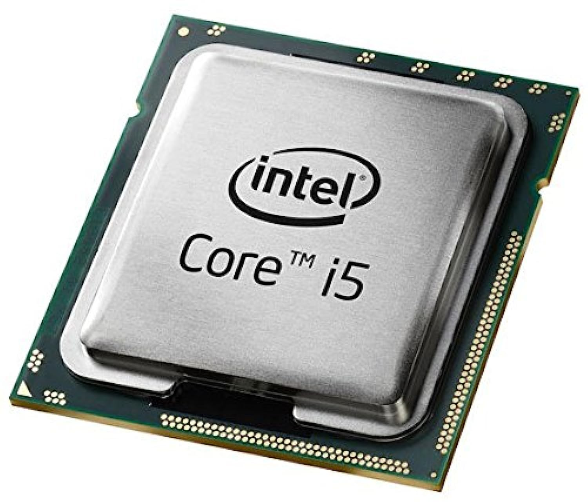

Unidad de Procesamiento Central (CPU)

La Unidad de Procesamiento Central (conocida por las siglas CPU, del
inglés central processing unit) o procesador es un componente del
hardware dentro de un ordenador, teléfonos inteligentes, y otros
dispositivos programables.
Su función es interpretar las instrucciones de un programa
informático mediante la realización de las operaciones básicas
aritméticas, lógicas, y externas (procedentes de la unidad de
entrada/salida). Su diseño y su avance ha variado notablemente desde
su creación, aumentando su eficiencia y potencia y reduciendo el
consumo de energía y el coste.
Un ordenador puede contener más de una CPU (multiprocesamiento).
En la actualidad, los microprocesadores están constituidos por un
único circuito integrado (chip) aunque existen los procesadores
multinúcleo (varias CPU en un solo circuito integrado). Un circuito
integrado que contiene una CPU también puede contener los
dispositivos periféricos y otros componentes de un sistema
informático; similar a un microcontrolador (menos potente en RAM)
se le denomina sistema en un chip (SoC).
Los componentes de la CPU son:
Unidad aritmético lógica o unidad de cálculo (del inglés: Arithmetic
Logic Unit o ALU): realiza operaciones aritméticas y lógicas.
Unidad de control (CU): dirige el tráfico de información entre los
registros de la CPU y conecta con la ALU las instrucciones extraídas de la memoria.
Registros internos: no accesibles (de instrucción, de bus de datos
y bus de dirección) y accesibles de uso específico (contador programa,
puntero pila, acumulador, flags, etc.) o de uso general.
Historia